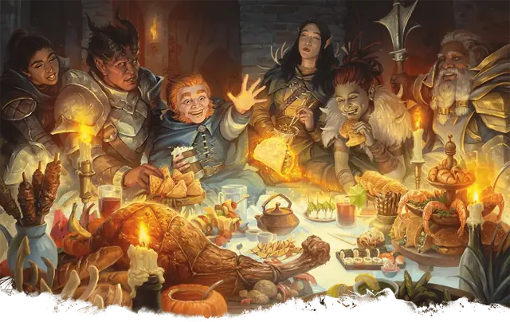

Пир героев
Heroes’ Feast
6 уровень, Призыв

Время сотворения 10 минут
Дистанция На себя
Компоненты В, С, М (инскрустированная драгоценными камнями чаша стоимостью не менее 1000 ЗМ, расходуемая заклинанием)
Длительность Мгновенная
Вы сотворяете пир, появляющийся на поверхности в 10-футовом Кубе рядом с вами. В пире может участвовать до 12 существ; пир нужно поглощать в течение 1 часа, и через этот час он исчезает. Положительные эффекты пира не вступают в силу, пока не пройдёт этот час.
Участвовавшее в пиршестве существо получает несколько преимуществ, длящихся 24 часа: существо обладает Сопротивлением урону Ядом, Иммунитетом к состояниям Испуганный и Отравленный, а кроме того, его максимум Хитов увеличивается на 2к10, и его текущие Хиты увеличиваются на то же число.